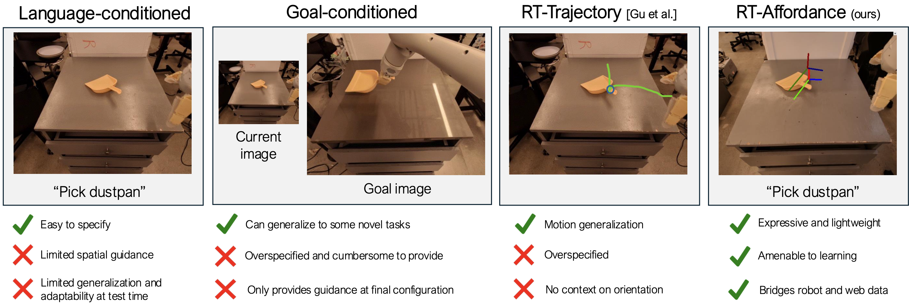
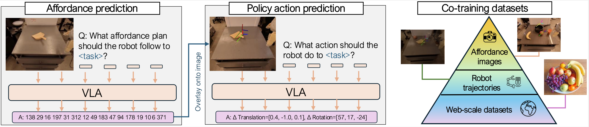

We explore how intermediate policy representations can facilitate generalization by providing guidance on how to perform manipulation tasks. Existing representations such as language, goal images, and trajectory sketches have been shown to be helpful, but these representations either do not provide enough context or provide over-specified context that yields less robust policies. We propose conditioning policies on affordances, which capture the pose of the robot at key stages of the task. Affordances offer expressive yet lightweight abstractions, are easy for users to specify, and facilitate efficient learning by transferring knowledge from large internet datasets. Our method, RT-Affordance, is a hierarchical model that first proposes an affordance plan given the task language, and then conditions the policy on this affordance plan to perform manipulation. Our model can flexibly bridge heterogeneous sources of supervision including large web datasets and robot trajectories. We additionally train our model on cheap-to-collect in-domain affordance images, allowing us to learn new tasks without collecting any additional costly robot trajectories. We show on a diverse set of novel tasks how RT-Affordance exceeds the performance of existing methods by over 50%, and we empirically demonstrate that affordances are robust to novel settings.
Conditioning on language is intuitive, yet language typically does not provide enough guidance on how to perform the task. Goal images and trajectory sketches are typically over-specified and present learning challenges. We propose conditioning policies on intermediate affordance representations, which are expressive yet compact representations of tasks, making them easy to specify and to learn.
We propose a hierarchical model dubbed RT-Affordance. First we predict the affordance plan given the task language and initial image of the task. We project the affordance (in text) onto the image, and subsequently condition the policy on images overlaid with the affordance plan. We co-train the model on web datasets (largest data source), robot trajectories, and a modest number of cheap-to-collect images labeled with affordances.
This website was heavily inspired from webpages from Brent Yi and Laura Smith.